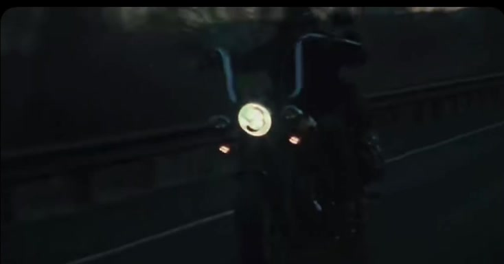

Reel 02 · Work13 pieces
Work
Music videos, venue and brand films, live sessions, his own films, and prints. Every piece opens on its own page, at its real aspect.
-

Official music video
R-Dee — READY
-

Official music video
CZYK — A Grave In Heaven
-

Official music video
Ian Munsick — Geronimo
-

Venue showcase for GigFinesse
The Ellwood at Goleta Beach
-

GigFinesse Originals, live session
Cue’d Up ft. Mer Bear
-

A cross-section of the work
Showreel
-

Film
Field at Dusk
-

Film
Western, Black & White
-

Film
Night Ride
-

Film
Desert Highway
-

Film
Forest, Rain
-

Personal film
At the Sea
-

Group exhibition
Prints
Nothing in this category yet.
End of reel
Have something to make?